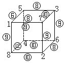

第十五讲 综合题选讲
小学数学竞赛综合题，主要包括以下几个方面：
①逻辑关系较复杂的问题；
②数与形相结合的问题；
③较复杂的应用题；
④较灵活的组合、搭配问题；
⑤与“最多”、“最少”有关的问题。
解答小学数学竞赛的综合题，首先要能熟练、正确解答有关的基本题，同时要认真读题，准确理解题意，在分析题目条件，设计解题程序上下功夫。
例1 一个正方体的八个顶点处分别标上1、2、3、4、5、6、7、8.再把各棱两端上所标的二数之和写在这条棱的中点，问：在棱的中点最少能标出几种数值？
分析 对于1、2、3、4、5、6、7、8这些数中两两之和，有下列情形：
有4种形成9的和：1+8=2+7=3+6=4+5；
有3种形成8的和：1+7=2+6=3+5；
有3种形成10的和：2+8=3+7=4+6；
有3种形成7的和：1+6=2+5=3+4；
有3种形成11的和：3+8=4+7=5+6；
有2种形成6的和：1+5=2+4；
有2种形成5的和：1+4=2+3；
有2种形成12的和：4+8=5+7；
有2种形成13的和：5+8=6+7；
此外还有1+2=3，1+3=4，6+8=14，7+8=15各一种。
首先指出棱的中点处不可能仅出现3种数，理由是：3、4、5、6、7、8、9、10、11、12、13、14、15中的数，如果只用其中3个数（标在棱的中点处），那么这三个数不能写成共12种不同形式的（取自于1、2、…、8之中的两数）和，而正方体棱数有12个。
再说明，棱的中点处不可能只标有4种不同数值，为证明这一点，可以分下列情况说明。
如果在12条棱上有3个“7”、3个“8”、3个“10”、3个“11”，那么在正方体顶点处要出现4次“6”进行运算.这是不可能.因为每个顶点处的数只参加3次加法运算。
如果在12条棱上有3个“9”，此外，必定还有7、8、10、11中的某三个数字（各三次），那么棱上数之和只能是
（9+7+8+10）×3=102，
（9+8+10+11）×3=114，
（9+7+10+11）×3=111，
（9+7+8+11）×3=105。
它们都与棱上所有数之和应当是（1+2+…+8）×3=108矛盾.这说明棱上的数不可能是3个“9”以及7、8、10、11中某3个各出现3次。
如果在12条棱的中点出现4个“9”以及另外三种数，那么另外三种数应各出现3、3、2次.出现3次的只能是7、8、10、11中的两个.出现两次的则是5、6、12、13中的一个或者是7、8、10、11中未被用了3次的两个中的一个.设出现两次的棱的中点数为a，出现3次的为b或c，则因为
4×9+3×（b+c）+2a=108，
所以b+c必须为偶数.在7、8、10、11中取两数b、c，使其和为偶数，只有7、11及8、10这两种可能.无论哪种情形，都有b+c=18，因此2a=108-36-3×18=18，a=9.与12条棱有4个9矛盾.这说明上述情况不能出现。
综上所述，棱中点不可能仅有四种不同数。
棱中点可以有五种不同数值，这可由右图看出：棱中点共出现4个“9”、3个“10”、3个“8”、1个“6”、1个“12”。

这说明棱的中点最少能标出5种不同数值。
例2 一组互不相同的自然数，其中最小的是1，最大的是25，除去1之外，这组数中的任一个数或者等于这组数中某一个数的2倍，或者等于另外两个数之和.在满足要求的所有可能的数组中，寻找出使得组内各数之和最大及最小的数组，并求这组数之和的最大值、最小值。
分析 很自然猜想并容易验证数组1，2，3，…，24，25符合题目要求，显然这个数组的和是最大的，这个最大的和是1+2+3+…+24+25=325。
困难在于搜寻最小的数组。
把数组中的数由小到大排起来，容易看出：
1后边的数一定是2；2后边可以是3，也可以是4；3后边可能是4、5、6；4后边可能是5、6、8.把它们列出来就是
1，2，3，4，…，25；
1，2，3，5，…，25；
1，2，3，6，…，25；
1，2，4，5，…，25；
1，2，4，6，…，25；
1，2，4，8，…，25。
25是奇数，它只能是另外两个数之和，容易验证在上述数列的“…”处不能只加入一个数，也就是说，在上述六种数列的每个“…”中，至少要再加入两个数.而且，还推知后加入的数中至少有两个数，这两个数的和不小于25.理由是，如果后加入的任意两个数之和都小于25，那么就不可能得到最后的25这个数。
根据以上理由，我们应当先考虑1，2，3，4，…，25这一列数.看看是否能只加入两个数，且加入的两个数之和是25。
25=5+20=6+19=7+18=8+17=9+16
=10+15=11+14=12+13。
在1，2，3，4，…，25中的“…”处可加入5，但是不能有20（20不是1、2、3、4、5中任何一数的两倍，也不是其中任何两数之和）；可加入6但不能在6后写19；可加入7，但不能在7后写18，可加入8，但不能在8后写17.另一方面，紧接1，2，3，4之后不可加入9、10、11、12.这表明1，2，3，4，…，25中的“…”处仅加入两个数，且这两个数之和是25是办不到的。
接着考察1，2，3，5，…，25：是否可以在“…”中仅加两个数，得到符合题意的数组.
容易看出1，2，3，5，10，15，25是符合题意的一组数.因为在“…”中加入的两个数，不论怎么加，它们的和的最小值是25，现在加入10和15，其和恰是最小值25.所以这数组的和最小.因此，所求的最小和是
1+2+3+5+10+15+25=61。
例3 观察下面的减法算式
□□□□-□□□-□□=□。
其中□□□□表示四位数，□□□表示三位数，□□表示两位数，□表示一位数.问：这样的正确算式共有几种？
分析 换成加法算式，就是要回答共有多少种形如
□□□+□□+□=□□□□
的正确算式？可以从两方面考虑：
①如果□□□+□□是个三位数.那么这个和再加上一个一位数应该是四位数，容易看出
991+9=1000，
992+9=1001，992+8=1000，
993+9=1002，993+8=1001，993+7=1000，
…
999+9=1008，999+8=1007，…999+1=1000，这些和都是四位数，另一方面，
991=892+99=893+98=894+97=…=981+10；
992=893+99=894+98=895+97=…=982+10；
…
999=900+99=901+98=902+97=…=989+10.
可见，由一个三位数与一个两位数之和形成的符合题意的三位数是991、992、…、999.此时符合题意的算式共有90×（1+2+…+9）=4050（种）。
②如果□□□+□□是个四位数，那么这个四位数一定是“1□□□”形的数。
容易看出：满足上述限定条件的最小的三位数是901.这时901+99=1000是个最小的四位数。
902+99，902+98是四位数；
903+99，903+98，903+97是四位数；
…
990+99，990+98，990+97，…，990+10是四位数，
991+99，991+98，991+97，…，991+10是四位数，
…
999+99，999+98，999+97，…，999+10是四位数.可见，使□□□+□□是四位数的算式有
1+2+3+…+90+90×9=4905（种）。
注意到每一个形如□□□+□□是个四位数的算式中，再加上1、2、3、…、9后仍然是四位数，因此当：□□□+□□是四位数时，不同的算式
□□□□-□□□-□□=□共有
4905×9=44145（种）。
把①，②两种情况结合起来知共有
44145+4050=48195种合乎题目要求的算式。
说明：这三个例题虽然涉及的具体内容不同，但是有一个共同特性是都要分成几类较简单的情形，逐一回答较简单的情形的问题，最后解决原来提出来的问题，这种解题方法叫做“分情况解决问题”.通过用分情况的方法解题，可以提高同学们思维的条理性，培养分析问题的好习惯。
例4 桌上放着100个已经涂了色的小球.其中有红球、白球、黄球.允许你对它们改色，办法是：取出两个不同色的球，把它们涂上与它们颜色都不同的另一种颜色（例如你取出一个白球一个黄球，就把它们都改涂为红色），然后放回桌上，这叫“一次操作”，问：经过有限次操作后，你能否把所有球都改为同一种颜色？说明你的理由。
分析 100不是3的倍数，设原有红球、白球、黄球各x、y、z个.那么x、y、z不都是3的倍数，也不可能出现这样的情形：x、y、z三个数被3除后的余数互不相同（否则x+y+z=100就应该是3的倍数）.可见，x、y、z中有两个被3除的余数相同，另一个被3除的余数与它们不同。
设y、z被3除之后的余数相同，x被3除后的余数与它们不同。
如果y=z，那么可以用一白一黄变两个红球的方式经过有限步骤把所有的球都变为红色。
如果y≠z.比如说y＜z，z-y必是3的倍数.那么可以先进行“1白1黄变2红”的改色，直到把白球用完，这时桌上的球只有2种：红球和黄球.而此时黄球数目z-y是3的倍数.把黄球3个一组进行分组，黄球被分成若干组，取出一组（3个）黄球和1个红球，对这一组（4个球）进行改色，办法是：
先用1红1黄变2白，这时4个球是2白、2黄.再把2白2黄变为4红.于是每3个黄球加1个红球都可变为4个红球.因为黄球的组数是有限的，而红球越改越多所以经过有限步改色后，总可使桌上的球全变为红色。
说明：题目中的100并不是本质的数，也可以改为101，103，或不是3的倍数的其他数字.证法一样.另一方面，最后变成的颜色决定于原来三种球中，哪色球被3除所得的余数是单独的，例如当红色球被3除的余数与白球、黄球数目被3除的余数不同，而白球、黄球数被3除后余数相同时，最后就全变为红色。